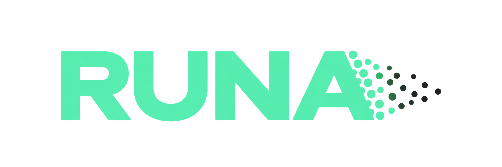

RESEARCH. UNIFY. NAVIGATE. ANALYSE.
A single interface for stellar characterisation.
RUNA brings together catalogue identification, photometry, published empirical relations and quality indicators that I developed and used during my research. A selected star becomes the common input for the application, keeping each calculation traceable to its source data and method.
Machine-learning component
The spectral-type tool estimates an M-dwarf subtype from Gaia G and 2MASS J photometry. It compares a quadratic colour model with a random forest that also uses W2, on the same separate test set. The deployed two-band estimator intentionally uses the simpler model so that its inputs and limits remain easy to inspect.
The training sample contains selected single, non-young M0–M5.5 stars from Cifuentes et al. (2020). It is an estimate to be checked against spectroscopy, not a classification replacement.
Current tools
RUNA queries SIMBAD and Gaia DR3, visualises a colour–magnitude diagram and observed SED, retrieves additional photometry, checks Gaia multiplicity indicators, explores nearby sources, retrieves TESS light curves when available, and connects stellar names with records in the NASA Exoplanet Archive. It also exposes published luminosities and the inputs behind its empirical estimates.
RUNA
Open the public application or inspect the repository, including its independent Python modules and source data.